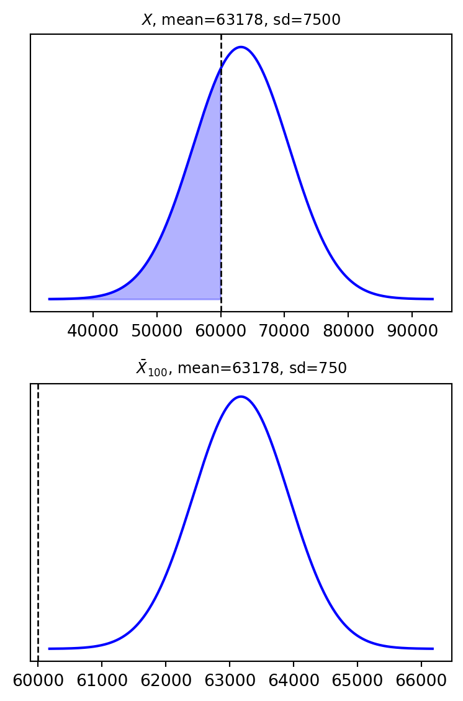

0.3372427268482495\[ \renewcommand{\P}{\mathbb{P}} \renewcommand{\E}{\mathbb{E}} \newcommand{\R}{\mathbb{R}} \newcommand{\var}{\mathrm{Var}} \newcommand{\cov}{\mathrm{cov}} \newcommand{\corr}{\mathrm{corr}} \newcommand{\dx}{\,\mathrm{d}x} \newcommand{\dy}{\,\mathrm{d}y} \newcommand{\eps}{\varepsilon} \]
For a random variable \(X\), we know how to calculate \(\E(X)\) and \(\var(X)\). Now we consider how to characterise a pair of random variables \(X,Y:\Omega\to\R\).
The joint cumulative distribution function (joint CDF) of \(X,Y:\Omega\to\mathbb{R}\) is the function \(F_{X,Y}:\mathbb{R}^2\to\mathbb{R}\) defined by \[ F_{X,Y}(x,y) := \P(X \le x,\ Y \le y). \] (The comma inside \(\P(\cdot)\) means “and”.)
For the discrete case, if \(X:\Omega\to\{x_1,x_2,\dots\}\) and \(Y:\Omega\to\{y_1,y_2,\dots\}\), we consider the joint probability mass function \[ p_{X,Y}(x_i,y_j) = \P(X=x_i,\ Y=y_j), \qquad F_{X,Y}(x,y) = \sum_{x_i\le x}\sum_{y_j\le y} p_{X,Y}(x_i,y_j). \]
Let the joint distribution of \(X:\Omega\to\{0,1\}\) and \(Y:\Omega\to\{0,1,2,3\}\) be given by
| \(X \backslash Y\) | \(0\) | \(1\) | \(2\) | \(3\) |
|---|---|---|---|---|
| \(0\) | \(\frac{1}{8}\) | \(\frac{2}{8}\) | \(\frac{1}{8}\) | \(0\) |
| \(1\) | \(0\) | \(\frac{1}{8}\) | \(\frac{2}{8}\) | \(\frac{1}{8}\) |
so, e.g., \(p_{X,Y}(1,2) = \P(X=1, Y=2) = \frac{2}{8}\).
Summing rows and columns gives the marginal distributions: \[ p_X(0) = \tfrac48=\tfrac12, \qquad p_X(1) = \tfrac48=\tfrac12, \] \[ p_Y(0) = \tfrac18, \qquad p_Y(1) = \tfrac38, \qquad p_Y(2) = \tfrac38, \qquad p_Y(3) = \tfrac18. \] So we reconstructed \(p_X\) and \(p_Y\) from \(p_{X,Y}\) (and hence \(F_X,F_Y\)) — but the opposite process is not unique, and hence impossible in general.
Let \(X,Y:\Omega\to\mathbb{R}\) be continuous random variables. Their joint probability density function (joint PDF) is the function \(f_{X,Y}:\mathbb{R}^2\to\mathbb{R}\), \(f_{X,Y}\geq0\), such that \[ F_{X,Y}(x,y) = \int_{-\infty}^x\Bigl(\int_{-\infty}^y f_{X,Y}(u,v)\,\mathrm{d}v \Bigr) \mathrm{d}u, \qquad \int_{-\infty}^\infty\Bigl(\int_{-\infty}^\infty f_{X,Y}(u,v)\,\mathrm{d}v \Bigr) \mathrm{d}u = 1. \]
For the given joint PDF \(f_{X,Y}\), the marginal PDFs are \[ f_X(x) = \int_{-\infty}^\infty f_{X,Y}(x,y)\dy, \qquad f_Y(y) = \int_{-\infty}^\infty f_{X,Y}(x,y)\dx. \] This is the continuous analogue of \(p_X(x_i)=\sum_j p_{X,Y}(x_i,y_j)\), \(p_Y(y_j)=\sum_i p_{X,Y}(x_i,y_j)\) above.
\[ \text{Discrete: } \E(XY) = \sum_i \sum_j x_i y_j\, p_{X,Y}(x_i, y_j), \qquad \text{Continuous: } \E(XY) = \int_{-\infty}^{\infty}\!\!\int_{-\infty}^{\infty} x\,y\,f_{X,Y}(x,y)\, dy\, dx. \]
Two random variables \(X\) and \(Y\) are independent if, for any \(a,b \in \mathbb{R}\), the events \(\{X \le a\}\) and \(\{Y \le b\}\) are independent, i.e. \[ F_{X,Y}(x,y) = F_X(x)\cdot F_Y(y) \qquad \text{for all } x,y. \] Then, in the discrete case, \(p_{X,Y}(x_i, y_j) = p_X(x_i)\cdot p_Y(y_j)\), and in the continuous case, \(f_{X,Y}(x,y) = f_X(x) \cdot f_Y(y)\). In both cases, \[ \E(XY) = \E(X)\,\E(Y). \]
The covariance of \(X,Y:\Omega\to\mathbb{R}\) is \[ \cov(X,Y) = \E(XY) - \E(X)\E(Y) = \E\bigl((X-\E(X))(Y-\E(Y))\bigr). \]
In particular, if \(X\) and \(Y\) are independent, \(\cov(X,Y)=0\) and \(\var(aX+bY)=a^2\var(X)+b^2\var(Y)\).
The correlation of \(X,Y\) is \[ \corr(X,Y) = \frac{\cov(X,Y)}{\sigma(X)\cdot\sigma(Y)}, \qquad -1\le \corr(X,Y)\le 1. \]
If \(X\) and \(Y\) are independent, then \(\corr(X,Y)=0\), i.e. \(X\) and \(Y\) are uncorrelated. The opposite is not necessarily true.
Using the same joint table as above, with marginals \(p_X(0)=p_X(1)=\tfrac12\) and \(p_Y(0)=\tfrac18,p_Y(1)=\tfrac38,p_Y(2)=\tfrac38,p_Y(3)=\tfrac18\): \[ \E(X) = \tfrac12, \qquad \E(Y) = \tfrac32, \qquad \E(XY) = 1. \] \[ \cov(X,Y) = 1 - \tfrac12\cdot\tfrac32 = \tfrac14 \quad\Longrightarrow\quad \text{$X$ and $Y$ are not independent.} \]
\[ \sigma^2(X) = \tfrac14, \qquad \sigma^2(Y) = \tfrac34, \qquad \sigma(X)=\tfrac12, \qquad \sigma(Y)=\tfrac{\sqrt3}{2}, \] \[ \corr(X,Y) = \frac{\tfrac14}{\tfrac12\cdot\tfrac{\sqrt3}{2}} = \frac{1}{\sqrt3}. \]
For independent random variables \(X,Y\), \(\E(XY)=\E(X)\E(Y)\), hence \(\cov(X,Y)=0\): independent random variables are uncorrelated. The converse is false, as the following example shows.
Let \(X\sim U(-1,1)\) and \(Y=X^2\). Then \(XY=X^3\), so \[ \cov(X,Y)=\E(X^3)-\E(X)\E(X^2). \] Since \(f_X(x)=\tfrac12\) on \((-1,1)\), \(\E(X)=0\) and \[ \E(X^3)=\frac12\int_{-1}^1 x^3\,dx = \frac12\left[\frac{x^4}{4}\right]_{-1}^1 = 0. \] Therefore \(\cov(X,Y)=0\): \(X\) and \(Y\) are uncorrelated. However, \(Y=X^2\) is a deterministic function of \(X\), so \(X\) and \(Y\) are clearly not independent.
Let \(X_1, \ldots, X_n:\Omega\to\R\). They are called independent if, for any \(a_1,\ldots,a_n\in\R\), the events \(\{X_1\leq a_1\}, \ldots, \{X_n\leq a_n\}\) are independent, i.e. their joint CDF factorises: \[ F_{X_1,\ldots,X_n}(x_1,\ldots,x_n) = F_{X_1}(x_1)\cdots F_{X_n}(x_n). \]
\(X_1, X_2, \ldots\) are independent and identically distributed (i.i.d.) if any finite group of them is independent and they all share the same distribution \(F_{X_1}=F_{X_2}=\cdots=F_X\), i.e. \(X_1\sim X\), \(X_2\sim X,\ldots\)
Let \(X_1, X_2,\ldots\) be i.i.d. with \(\E(X)=\mu\), \(\var(X)=\sigma^2<\infty\). Consider the sample average \(\bar{X}_n = \frac{X_1+\ldots+X_n}{n}\).
\[ \E(\bar{X}_n) = \frac1n\bigl(\underbrace{\E(X_1)}_{=\mu}+\cdots+\underbrace{\E(X_n)}_{=\mu}\bigr) = \frac1n\cdot n\cdot\mu = \mu. \] \[ \var(\bar{X}_n) = \frac{1}{n^2}\var(X_1+\cdots+X_n) \overset{\text{independence}}{=} \frac{1}{n^2}\bigl(\underbrace{\var(X_1)}_{=\sigma^2}+\cdots+\underbrace{\var(X_n)}_{=\sigma^2}\bigr) = \frac{\sigma^2}{n}. \] So \(\E(\bar{X}_n) = \mu\), \(\var(\bar{X}_n) = \dfrac{\sigma^2}{n}\).
Let \(X_1, X_2,\ldots\) be i.i.d. with \(\E(X)=\mu\), \(\var(X)=\sigma^2<\infty\). Then \(\bar{X}_n\to \mu\) stochastically (in probability): for each \(\varepsilon>0\), \[ \lim_{n\to\infty} \P(|\bar{X}_n-\mu|>\varepsilon) = 0, \qquad\text{equivalently}\qquad \lim_{n\to\infty} \P(|\bar{X}_n-\mu|\leq \varepsilon) = 1. \]
The bigger \(n\) you take, the smaller the chance of \(\{|\bar{X}_n-\mu|>\varepsilon\}\). We can choose \(\varepsilon\) arbitrarily small: LLN states there is high probability (close to \(1\)) of \(\bar{X}_n\) being very close to \(\mu\), if \(n\) is large enough.
Let \(A\) be a random event with \(\P(A)=p\). Let \(X=1\) if \(A\) holds, \(X=0\) otherwise (Bernoulli), and \(X_1,\ldots,X_n,\ldots\) i.i.d. with \(X_n\sim X\). Then \(\mu=\E(X)=p\), and the sample average \[ \bar{X}_n=\frac1n(X_1+\ldots+X_n) \] is the frequency of \(A\) among \(n\) trials. LLN says \[ \frac{\text{number of trials when $A$ happened}}{\text{number $n$ of all trials}}\to \P(A), \qquad n\to\infty, \] matching our intuitive understanding of probability.
Consider many rolls of a fair six-sided die. Let \(X_j\) be the score of the \(j\)-th roll, \(S_n=X_1+\ldots+X_n\). All \(X_j\) are i.i.d. with \[ \E(X)=1\cdot \tfrac16 + \cdots + 6\cdot \tfrac16=\frac{7\cdot 6}{2}\cdot \tfrac16 = \frac72. \] By LLN, for any small \(\varepsilon>0\), \[ \lim_{n\to\infty}\P\Bigl( \bigl\lvert \tfrac{S_n}{n} - \tfrac72\bigr\rvert \leq \varepsilon \Bigr) = 1. \]
By LLN, \(\bar{X}_n\to\E(X)=\E(\bar X_n)\), i.e. \(\bar{X}_n-\E(\bar X_n)\to0\). The CLT tells us how fast this happens. Recall \(\sigma(\bar{X}_n)=\dfrac{\sigma(X)}{\sqrt n}\). Define \[ Z_n:= \frac{\bar{X}_n - \E(\bar{X}_n)}{\sigma(\bar{X}_n)} = \frac{\sqrt{n}}{\sigma}(\bar{X}_n-\mu). \]
One checks \(\E(Z_n)=0\) and \(\var(Z_n)=1\): numerator and denominator both \(\to0\) as \(n\to\infty\), but their ratio is standardised at every \(n\).
Let \(X_1,\ldots,X_n,\ldots\) be i.i.d. with \(X_n\sim X\), \(\mu:=\E(X)\), \(\sigma^2:=\var(X)<\infty\), and \(Z_n\) as above. Then \[ Z_n\to Z\sim \mathcal{N}(0,1), \qquad n\to\infty, \] in the sense that \(\displaystyle\lim_{n\to\infty}\P(Z_n\leq z)= \Phi(z)\) for all \(z\in\R\). As a corollary, \[ \lim_{n\to\infty}\P(a\leq Z_n\leq b)= \Phi(b)-\Phi(a), \qquad \lim_{n\to\infty}\P(Z_n\geq c)= 1-\Phi(c). \]
The CLT shows that \(\bar{X}_n\) fluctuates around \(\mu\) with standard deviation \(\sigma(\bar{X}_n)=\dfrac{\sigma}{\sqrt n}\), significantly less than \(\sigma\) itself — regardless of the distribution of \(X_n\).
The average teacher’s salary in New Jersey in 2023 is $63,178, normally distributed with standard deviation $7,500: \(X\sim \mathcal{N}(63178,7500^2)\).
Probability a randomly selected teacher makes less than $60,000: \[ \P(X<60000)=\P\Bigl(\underbrace{\tfrac{X-63178}{7500}}_{=:Z}<\tfrac{60000-63178}{7500}\Bigr)=\P(Z<-0.42)=\Phi(-0.42)\approx 0.3372. \]
Roughly each third teacher earns less than $60,000.
Now take the average of \(100\) teachers’ salaries, \(\bar{X}_{100}=\frac{X_1+\cdots+X_{100}}{100}\). Then \(\E(\bar{X}_{100})=63178\) and \(\sigma(\bar{X}_{100})=\dfrac{7500}{\sqrt{100}}=750\), so \[ \P(\bar{X}_{100}<60000) = \P\Bigl(Z_{100}<\tfrac{60000-63178}{750}\Bigr) = \P(Z_{100}<-4.2)\underset{\text{CLT}}{\approx}\Phi(-4.2)\approx 0.0000133. \]
This is very unlikely — averaging shrinks the spread dramatically.
